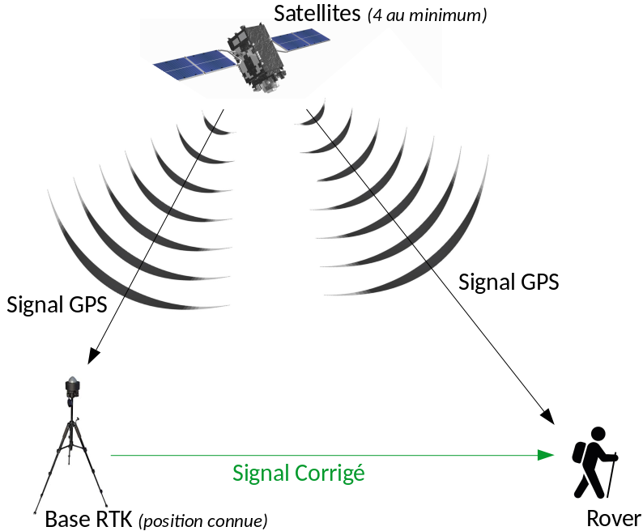
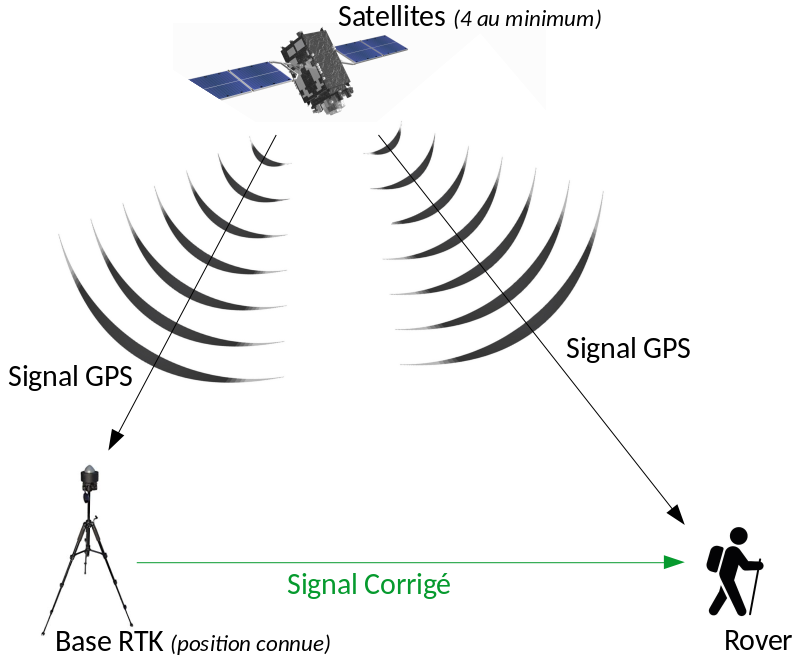

- Contexte de Recherche
- Rappel : Le système GPS
- Solution actuelle
- RTK
- Alternative low-cost
- Quelques chiffres
- Le réseau Centipède
- Perspectives
Une antenne GPS centimétrique low-cost.
Déploiement du réseau Centipède
Wilfried Heintz, Julien Ancelin
UMR 1201 Dynafor, INRA, Toulouse
Présentation
Contexte


Ecologie des paysages agri-forestiers
Contexte

Ecologie des paysages agri-forestiers
- Recherches pluri-disciplinaires :
- Différents taxons
- Différentes zones d'études
- Suivis à long terme
Contexte

Ecologie des paysages agri-forestiers
- Des besoins communs :
- Cartographier les territoires
- Géolocaliser nos objets d'études
Des zones d'études reculées

Géolocalisation difficile
- Fortes pentes
- Orientations défavorables
- Couvert forestier très dense
- Zones rocheuses
- Signal GSM rare ou absent
Rappel : Le système GPS

Global Positionning System
- Calcul de différence de temps avec satellite
(1 μs <=> 300m d'écart !) - Précision de 5 à 15m
- Dépendante du matériel
- Et des conditions environnementales
Les solutions actuelles
Appareils centimétriques
- Corrections avancées
- Positionnement centimétrique réel
MAIS
- Bugs OS
- (Trop !) coûteux
- Signal correctif (VRS) payant
- Mises à jour payantes
RTK
 

Puce RTK
- Librairie RTKLib
- Principe Real Time Kinematic
- Calcul de différence sur phase porteuse
- ==> Position centimétrique
Alternative low-cost

Antenne autonome "maison" (2017)
- Fabriquée par Julien Ancelin (INRA)
- Basée sur puce Reach RTK Emlid
- Interfacée sur tablette ou smartphone
- Envoi du signal corrigé par radio
Alternative low-cost

Antenne Reach RS+ & RS2
- Fabriquée par EMLID
- Distribuée en France
- Embarque la puce Reach M+
- Prête à utiliser
- Envoi de la trame en http
Quelques chiffres

GPS centimétrique
- ~ 15000 €
Signal corrigé
- ~ 2000 € / an
Reach M+
- ~ 250 $
Reach RS+
- ~ 800 $
Reach RS2
- ~ 1800 $
Réseau Centipède
Réseau d'antennes ouvertes
- Initié par J. Ancelin
- Réseau d'antennes autonomes
- Signal corrigé "centralisé"
- Puis renvoyé en http
- projet d'extension en Occitanie
Invitation